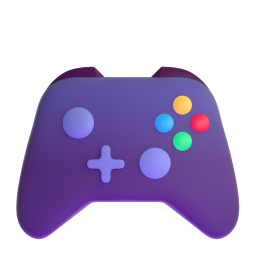
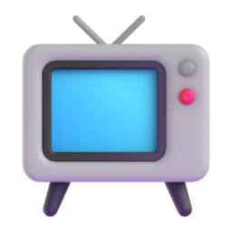
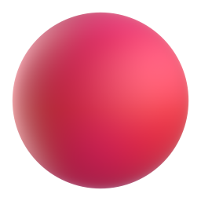
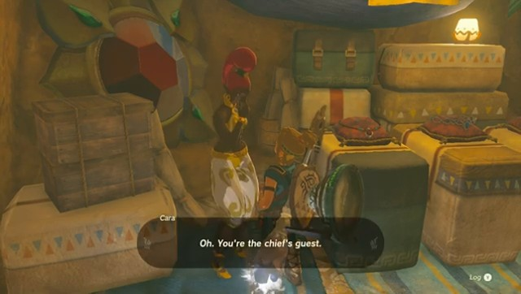
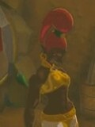
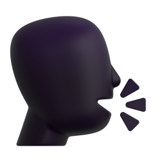
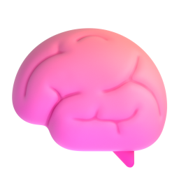
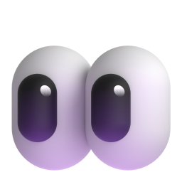
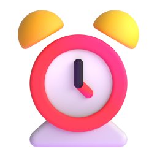
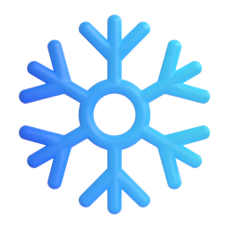

StreamDuo
A Live Commentator and a Research Agent for Unseen Games

One game in, ten games out
Trained on Baldur’s Gate 3 alone. Tested on 2,470 clips from ten games it has never seen, from open-world adventures to esports finals.
test on 10

Watch
TL;DR Trained on one game, StreamDuo commentates games it has never seen. When the commentator spots something it cannot name, it asks a research agent with the frames and keeps talking. The answer comes back two seconds later, while the stream goes on.

Live replay
Ten real seconds of The Legend of Zelda: Tears of the Kingdom, a game neither model saw in training. Both commentators were trained only on Baldur’s Gate 3. Press play and watch them side by side.


commentator
Single commentator = Proact-VL retrained on the same Baldur’s Gate 3 data. One line per second, as both models spoke it. Click a dot to jump to that second.
Timing transfers. Knowledge does not.
A streaming commentator trained on one game learns when to talk, and that carries over to any game. What it learns to say about characters, items and places belongs to the training game. Facing a new game, it does one of three things.

Talks around it
Describes what it sees and never names it.

Reaches for its training game
Fills the gap with a name it memorized from Baldur’s Gate 3, here for a Tears of the Kingdom character called Calip.
Asks, and names it
StreamDuo sends the frames to a research agent and uses what comes back.
Source-game leakage
Share of the names a model says that belong to Baldur’s Gate 3 and not to the game on screen. All three models were trained on the same Baldur’s Gate 3 clips.
How StreamDuo works
Two agents with complementary strengths. The commentator watches every second and decides when to talk, but only knows the game it was trained on. The research agent sees nothing unless asked, but can read the wiki of whatever game is being played.

Top: on an unseen game, the commentator asks the frozen research agent with the current frames, and the wiki entry that returns two seconds later lets it name what is on screen. Bottom: the two training stages.

Ask with frames
A model that cannot recognize a character cannot describe it well enough to search for it either. So the commentator sends the frames themselves, when its ask head fires.
Look, search, pick
The frozen research agent reads the frames, searches the game’s wiki, checks the candidates against the frames again, and returns up to three entries.

Keep talking, then use it
The stream does not wait. The answer arrives two seconds later and stays in context, and the commentator weaves it into its next line.
Learn when to ask
Asking only helps when the model does not already know the answer. We score each human line with and without an ideal answer, and label an ask two seconds earlier only where the answer clearly helps.
ask if g > 1 nat
Learn how to use answers
Real answers are noisy. The student sees the agent’s answer as it would at test time. Its teacher is the same model, frozen, shown the ideal answer. The student learns on its own samples with reverse KL.

research agent stays frozenResults on ten unseen games
Compared with recent streaming video LLMs, zero-shot and retrained on the same Baldur’s Gate 3 data.
Knowledge metrics count the first 126 words of each clip (twice the human average), so a model cannot gain recall by talking more. Judge scores come from a local Qwen3-30B.
BibTeX
@article{streamduo2026,
title = {StreamDuo: A Live Commentator and a Research Agent for Unseen Games},
author = {Gao, Zixian and Luo, Penghao and Cao, Xiangcheng and Li, Zhen and Xiu, Lixin and Cai, Ziqi and Wu, Erwin and Zhang, Kaipeng},
year = {2026}
}